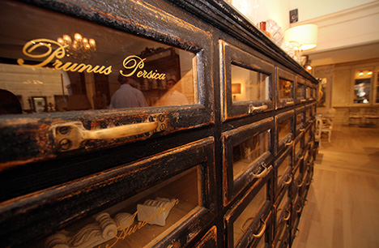
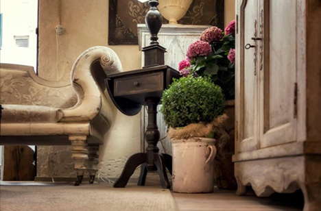
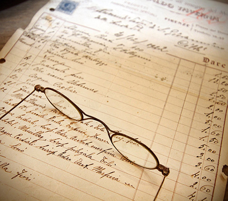
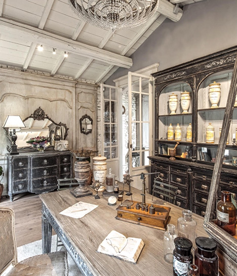

Falegnameria Dario Biagioni - mobili su misura - Firenze
Sono nato nel 1969 in una grande casa colonica nelle campagne del Mugello in Toscana. I miei genitori erano agricoltori ed io ho vissuto la campagna come un dono.
Pur non essendo questo lo spazio più adatto per parlare di tutto ciò, mi preme ricordare questi elementi perché li riconosco alla base della maturazione della mia fantasia che nel tempo ha preso spazio rivelandosi il frutto delle mie radici di bambino sognatore e entusiasta.
Penso che in questi tempi sia importante aprire la propria coscienza non solo come strumento di ascolto interiore legato ad una consapevolezza di sé più profonda ma anche come il mezzo per approdare su una terra in cui il nostro cammino ci possa condurre ad essere più umani.
Ci sono aspetti che non possono essere separati in questo percorso di vita, e allo stesso modo io non posso parlare delle mie realizzazioni considerandole oggetti scollegati in un tempo casuale.
Sono fermamente convinto che le nostre opere piccole e grandi raccolgano il nostro vissuto e come per magia ci leghino agli altri in un linguaggio molto sottile.
 